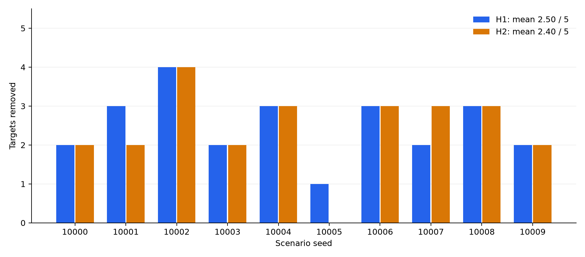

H1: belief-based polygons, lawnmower search, immediate target processing.H2: two systematic scouts for the first 900 seconds; remaining drones process by type value. Scouts join target processing after 900 seconds.
